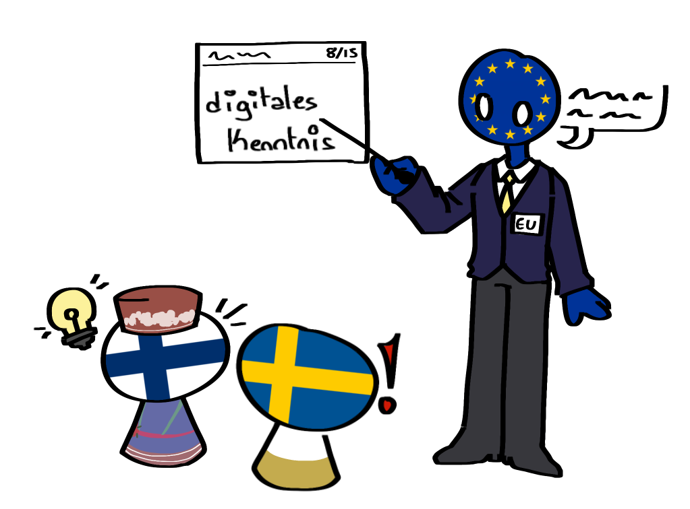

Die Ziele der Digitalpolitik sind als „Digitale Dekade” bekannt, da sich vorgenommen wurde, diese bis 2030 umzusetzen. Sie beinhalten folgendes:
Digital kompetente Bürger:innen und digital qualifizierte Fachkräfte
- 80% aller Erwachsenen sollen über digitale Kompetenzen verfügen
- 20 Millionen IKT-Fachkräfte sollen eingestellt werden, darunter deutlich mehr Frauen als vorher

Sichere, leistungsfähige und tragfähige digitale Infrastrukturen
- Alle Haushalte sollen über Gigabit-Anbindungen verfügen, Gebiete sollen mit 5G-Netzwerken versorgt werden
-
20% der hochmodernen und nachhaltigen Halbleiter sollen in Europa hergestellt werden
- Verringerung von Abhängigkeit für die Produktion
- Bau von 10.000 klimaneutralen, hochsicheren Randknoten in Europa, ebenso sollte dieses seinen ersten Quantencomputer besitzen
Digitaler Umbau von Unternehmen
- 75% der Unternehmen sollen Cloud-Computing-Dienste und KI nutzen
- Über 90% der KMU (Kleine und Mittlere Unternehmen) sollen mindestens grundlegendes digitales Verständnis besitzen
-
Zahl der Start-up-„Einhörner” verdoppelt
- Start-up-„Einhörner” beschreiben Unternehmen mit einer Bewertung von über 1 Mrd USD, die nicht börsennotiert sind
Digitalisierung öffentlicher Dienste
- Alle öffentlichen Dienste sollen online verfügbar gemacht werden
-
Alle Bürger:innen sollen Zugang zu ihren elektronischen Patientenakten haben
- 80% aller Bürger:innen sollen eine eID besitzen und nutzen